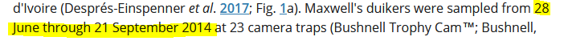
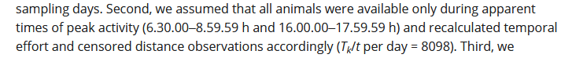

suppressPackageStartupMessages(library(Distance))
data("DuikerCameraTraps")
print(DuikerCameraTraps$Effort[1])[1] 680232Eric Rexstad
October 13, 2023
Computation of effort for each camera involves a series of steps. Computation is not difficult, just remember the steps. We use as an example, Howe’s Maxwell duiker data. In his data (DuikerCameraTrap) supplied in the Distance package, the effort associated with each camera is
suppressPackageStartupMessages(library(Distance))
data("DuikerCameraTraps")
print(DuikerCameraTraps$Effort[1])[1] 680232This note describes how to that effort was calculated.
From the Methods section of Howe, Buckland, Després-Einspenner, & Kühl (2017), we find the dates of deployment and collection

start <- as.Date("2014-06-28")
end <- as.Date("2014-09-21")
daysbetween <- as.numeric(difftime(end, start, units="days"))
daysout <- daysbetween - 1
print(daysout)[1] 84Only days when there was no research presence are included in analysis, hence one day is subtracted from duration of cameras in the field.
Data provided in the Distance package is for detections made during “peak” activity period for duikers. That peak period is specified further in the Methods section:

In the above snippet of text, Howe et al. (2017) states there are 8098 snapshot events per day within this peak activity period. For their cameras, the duration of a snapshot was 2 seconds. Let’s recreate that value:
snapshot.duration <- 2
morning.start <- as.POSIXct("2014-06-28 06:30:00" , format="%Y-%m-%d %H:%M:%OS")
morning.end <- as.POSIXct("2014-06-28 08:59:58" , format="%Y-%m-%d %H:%M:%OS")
evening.start <- as.POSIXct("2014-06-28 16:00:00" , format="%Y-%m-%d %H:%M:%OS")
evening.end <- as.POSIXct("2014-06-28 17:59:58" , format="%Y-%m-%d %H:%M:%OS")
morning <- difftime(morning.end, morning.start, units="secs")
evening <- difftime(evening.end, evening.start, units="secs")
total.secs <- as.numeric(morning) + as.numeric(evening)
daily.snapshots <- total.secs / snapshot.duration
print(daily.snapshots)[1] 8098Nearly finished. Multiply daily snapshots by the number of days of deployment:
[1] 680232[1] TRUEHooray!